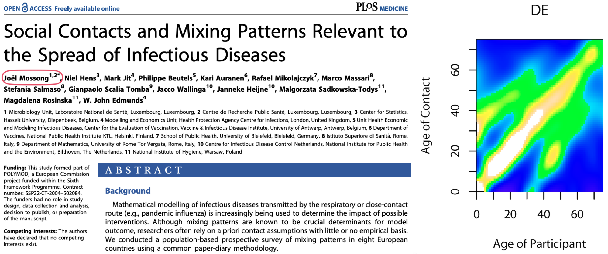
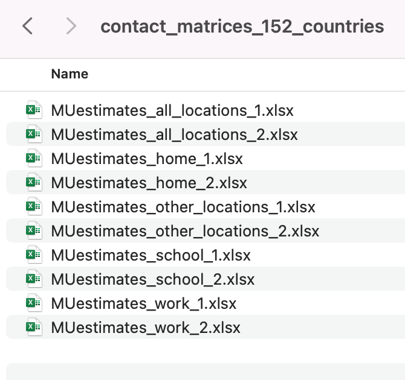
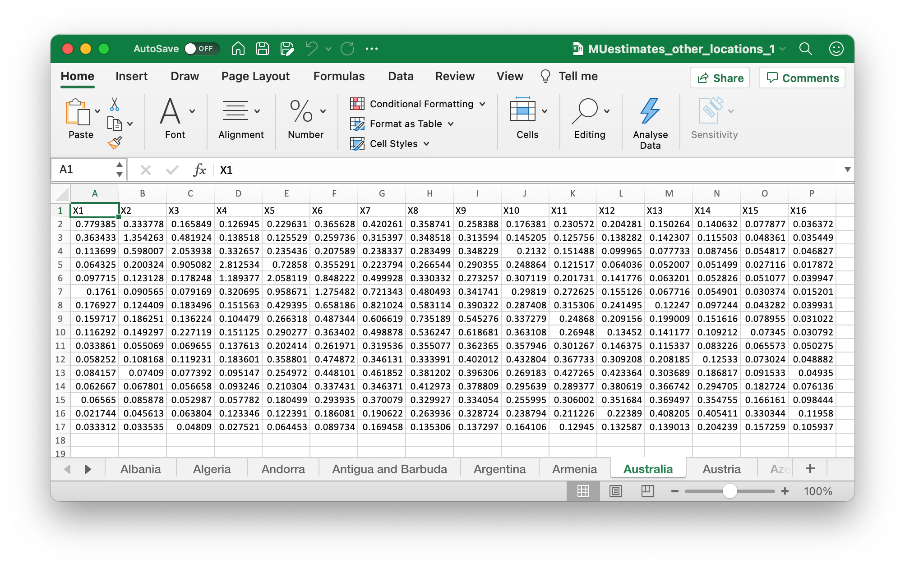
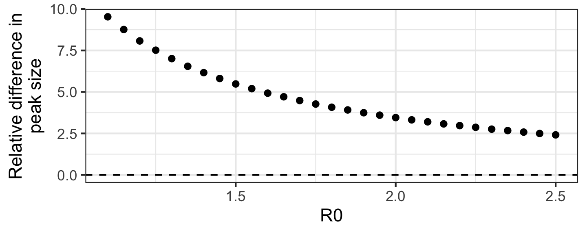
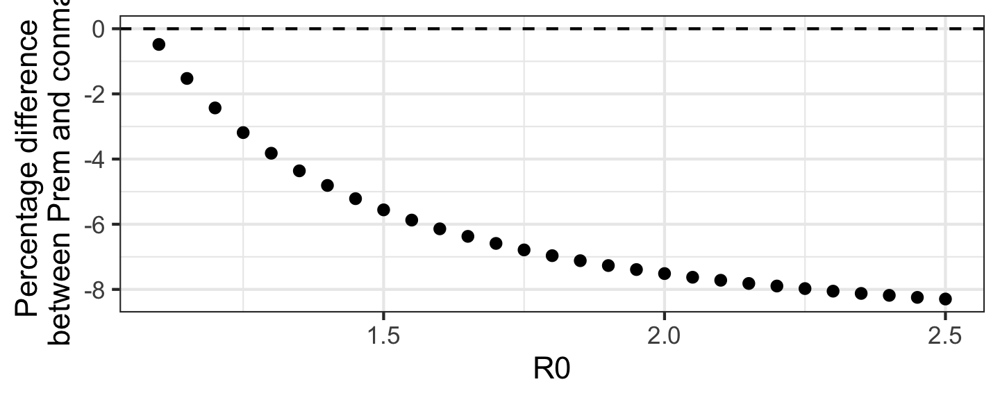
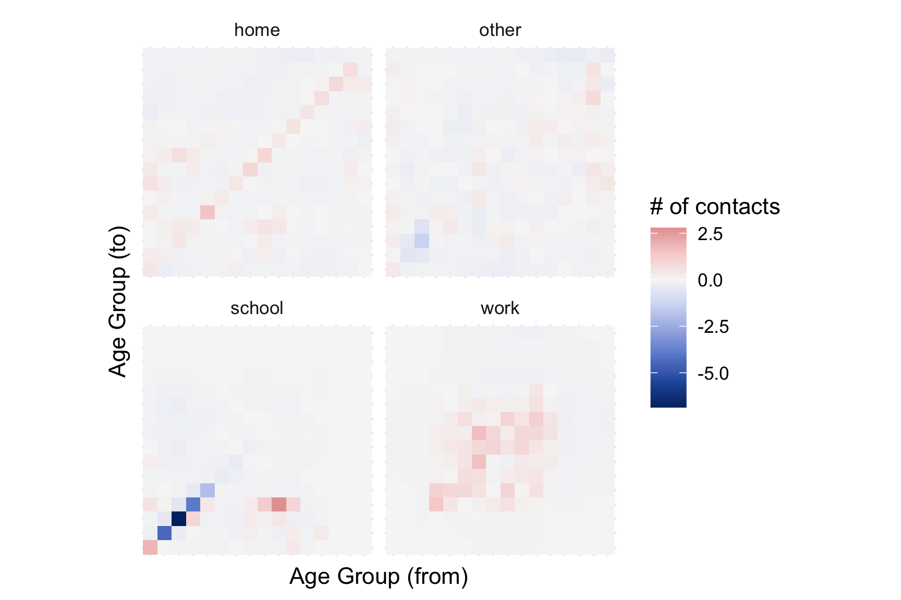

conmat: Programmatic generation of synthetic contact matrices
Going beyond Prem
Michael Lydeamore, Nick Tierney, Nick Golding
Department of Econometrics and Business Statistics
Contact matrices
- Some infectious diseases are spread from contact between individuals
- When we model disease, we need some idea of how often people contact other people
- Typically, we turn to contact diary studies
Contact Diary Studies
Contact diary studies follow individuals and ask them:
- how many contacts of a certain type,
- the duration of contact,
- the location of the contact,
- the frequency of the contact
They are undoubtedly the gold standard for data on the number of contacts.
But they are prohibitively expensive, and logistically very challenging.
POLYMOD
Published in 2008, Mossong et. al undertook a contact diary study of 7290 participants across Europe.
It remains the most widely cited contact diary study.
Contact matrix projection
Prem et. al formed a model that predicts the number of contacts based on the age of participants.
This model then allows for prediction to settings that are outside the original POLYMOD countries.
What is provided:


What is provided:
Estimates for 155 countries.
There is code, but it is not easily expandable to new settings.
If your country isn’t in the list of 155: no estimates for you.
Caution
Australia was in the original set of 155, but was not included in the updated estimates a few years ago.
There are other more technical concerns with components of the model that probably have minor influence on the projects.
An alternative approach
We developed an open-source approach, that can be applied to any input population (big or small).
You can view the package online: https://www.github.com/idem-lab/conmat
or install using:
Model details
Fundamentally, these models have pretty little to go on. They are trained on the number of contacts between two age groups \(i\) and \(j\). In conmat, this takes the form:
\[\begin{aligned} c_{ij} = \beta_0 + \beta_1(|i-j|) + &\beta_2(|i-j|^2) + \beta_3(i\times j) + \beta_4(i+j) +\\ &\beta_5\max(i, j) + \beta_6\min(i, j) \end{aligned} \]
Tip
We want to fit this as a generalised additive model, so actually we have splines on these terms to satisfy the smoothness requirements.
This is very similar to the approach by Prem et. al who perform post-hoc smoothing of the parameters after MCMC.
Model details
- All that is needed to make predictions is the number of individuals in different age groups.
- This is easily obtainable information from most statistics bureaus/governments.
Data sources
- The
socialmixrpackage has this information for most countries:
country lower.age.limit year population
1 Australia 0 2015 1545114
2 Australia 5 2015 1521110
3 Australia 10 2015 1416482
4 Australia 15 2015 1480341
5 Australia 20 2015 1663584
6 Australia 25 2015 1763281
7 Australia 30 2015 1753076
8 Australia 35 2015 1574157
9 Australia 40 2015 1655520
10 Australia 45 2015 1559506
11 Australia 50 2015 1569432
12 Australia 55 2015 1451869
13 Australia 60 2015 1281612
14 Australia 65 2015 1153780
15 Australia 70 2015 843695
16 Australia 75 2015 628870
17 Australia 80 2015 466797
18 Australia 85 2015 303108
19 Australia 90 2015 135089
20 Australia 95 2015 29268
21 Australia 100 2015 3855And for inside Australia, conmat provides some ABS functions:
# A tibble: 18 × 4 (conmat_population)
- age: lower.age.limit
- population: population
lga lower.age.limit year population
<chr> <dbl> <dbl> <dbl>
1 Melbourne (C) 0 2020 4882
2 Melbourne (C) 5 2020 3450
3 Melbourne (C) 10 2020 2675
4 Melbourne (C) 15 2020 9396
5 Melbourne (C) 20 2020 38434
6 Melbourne (C) 25 2020 38546
7 Melbourne (C) 30 2020 25834
8 Melbourne (C) 35 2020 15072
9 Melbourne (C) 40 2020 8554
10 Melbourne (C) 45 2020 6753
11 Melbourne (C) 50 2020 5941
12 Melbourne (C) 55 2020 5859
13 Melbourne (C) 60 2020 5060
14 Melbourne (C) 65 2020 4443
15 Melbourne (C) 70 2020 3611
16 Melbourne (C) 75 2020 2320
17 Melbourne (C) 80 2020 1467
18 Melbourne (C) 85 2020 1459Testing model fit: SIR Model
To test model fit, we will use a structured, SIR model. For the population in group \(i\),
\[ \lambda(t) = \beta \times C \times I(t),\] where
- \(\beta\) represents the probability of transmission given contact (here assumed to be independent of age group)
- \(C\) is an \(N \times N\) matrix with element \((i,j)\) representing the number of contacts from age group \(i\) to age group \(j\), and
- \(I(t)\) is a \(N \times 1\) vector of the number of infected individuals
Testing model fit: SIR Model
Then,
\[\begin{aligned} \frac{dS}{dt} &= -\lambda(t) S I \\ \frac{dI}{dt} &= \lambda(t) S I - \gamma I \\ \frac{dR}{dt} &= \gamma I \end{aligned} \]
and the total population size is conserved (\(S+I+R = N\)).
Difference in peak size compared to POLYMOD
- Depends on R0 but contact model estimates are systematically lower
- Possibly because of unequal sampling which isn’t accounted for in data


Difference in peak size compared to Prem
conmatmethod systematically gives larger epidemics compared to Prem et. al- Could be due to different interpretations of parameters or slightly different data sources

For a fixed R0=1.5
Why not just use Prem?
- There’s no ground truth in these projects, making comparisons to almost impossible
Why should I use this? It’s easy!
Getting a contact matrix is easy:
world_data <- socialmixr::wpp_age()
population <- age_population(
data = world_data,
location_col = country,
location = "Australia",
age_col = lower.age.limit,
year_col = year,
year = 2015
)
population# A tibble: 21 × 5 (conmat_population)
- age: lower.age.limit
- population: population
country year population lower.age.limit upper.age.limit
<chr> <int> <dbl> <dbl> <dbl>
1 Australia 2015 1545114 0 4
2 Australia 2015 1521110 5 9
3 Australia 2015 1416482 10 14
4 Australia 2015 1480341 15 19
5 Australia 2015 1663584 20 24
6 Australia 2015 1763281 25 29
7 Australia 2015 1753076 30 34
8 Australia 2015 1574157 35 39
9 Australia 2015 1655520 40 44
10 Australia 2015 1559506 45 49
# ℹ 11 more rowsWhy should I use this?
Getting a contact matrix is easy:
Why should I use this?
[0,5) [5,10) [10,15) [15,20) [20,25)
[0,5) 5.802591e-01 4.813549e-01 2.402471e-01 1.620169e-01 2.321232e-01
[5,10) 4.646578e-01 7.514361e-01 4.946728e-01 1.791579e-01 1.174632e-01
[10,15) 2.269854e-01 4.841612e-01 7.948923e-01 4.093514e-01 1.390883e-01
[15,20) 1.577753e-01 1.807368e-01 4.219247e-01 6.808458e-01 3.419038e-01
[20,25) 2.432882e-01 1.275370e-01 1.542955e-01 3.679832e-01 5.807800e-01
[25,30) 4.886107e-01 2.352219e-01 1.226892e-01 1.477810e-01 3.335959e-01
[30,35) 6.641648e-01 5.188639e-01 2.431926e-01 1.258683e-01 1.448990e-01
[35,40) 4.878934e-01 6.644817e-01 4.999019e-01 2.317582e-01 1.165367e-01
[40,45) 2.582931e-01 4.382340e-01 5.778488e-01 4.314489e-01 1.936253e-01
[45,50) 1.687273e-01 2.152100e-01 3.566710e-01 4.708383e-01 3.386774e-01
[50,55) 1.689770e-01 1.393551e-01 1.740598e-01 2.883215e-01 3.645253e-01
[55,60) 1.852236e-01 1.352834e-01 1.089212e-01 1.338642e-01 2.115404e-01
[60,65) 1.559059e-01 1.373831e-01 9.632628e-02 7.402672e-02 8.744629e-02
[65,70) 9.671786e-02 1.081266e-01 8.924898e-02 5.758573e-02 4.288228e-02
[70,75) 5.304213e-02 6.517089e-02 6.630047e-02 4.931502e-02 3.157968e-02
[75,80) 3.063155e-02 3.655708e-02 3.961536e-02 3.605985e-02 2.759811e-02
[80,85) 1.701003e-02 2.046395e-02 2.097059e-02 2.037989e-02 1.984339e-02
[85,90) 6.793228e-03 9.262530e-03 9.350083e-03 8.704453e-03 9.446582e-03
[90,95) 1.485635e-03 2.547974e-03 2.852779e-03 2.654936e-03 2.853791e-03
[95,100) 1.550040e-04 3.807001e-04 5.280096e-04 5.572703e-04 6.106408e-04
[100,Inf) 4.001678e-06 1.569944e-05 2.851021e-05 3.613939e-05 4.352133e-05
[25,30) [30,35) [35,40) [40,45) [45,50)
[0,5) 4.406440e-01 5.982784e-01 4.552888e-01 2.465532e-01 1.640271e-01
[5,10) 2.047720e-01 4.511788e-01 5.985671e-01 4.038050e-01 2.019578e-01
[10,15) 1.045372e-01 2.069748e-01 4.407441e-01 5.211368e-01 3.275955e-01
[15,20) 1.297843e-01 1.104135e-01 2.106083e-01 4.010565e-01 4.457390e-01
[20,25) 3.153175e-01 1.368029e-01 1.139796e-01 1.937146e-01 3.450794e-01
[25,30) 5.243732e-01 3.144551e-01 1.356807e-01 1.013971e-01 1.623030e-01
[30,35) 3.148155e-01 4.980613e-01 2.954307e-01 1.163616e-01 8.325675e-02
[35,40) 1.311236e-01 2.851813e-01 4.517921e-01 2.542122e-01 9.813646e-02
[40,45) 9.579716e-02 1.098093e-01 2.485196e-01 4.075377e-01 2.345534e-01
[45,50) 1.505639e-01 7.714654e-02 9.420239e-02 2.303081e-01 4.062297e-01
[50,55) 2.628503e-01 1.238732e-01 6.901509e-02 9.188973e-02 2.408397e-01
[55,60) 2.718109e-01 2.122671e-01 1.101458e-01 6.639312e-02 9.279330e-02
[60,65) 1.446095e-01 2.063714e-01 1.771966e-01 9.622107e-02 5.879160e-02
[65,70) 5.498418e-02 1.035664e-01 1.608957e-01 1.394100e-01 7.437032e-02
[70,75) 2.651484e-02 3.913120e-02 7.821431e-02 1.191438e-01 1.011711e-01
[75,80) 2.059216e-02 1.972887e-02 2.968419e-02 5.702188e-02 8.691144e-02
[80,85) 1.798484e-02 1.488353e-02 1.402809e-02 2.034797e-02 4.046827e-02
[85,90) 1.090387e-02 1.044056e-02 8.227622e-03 7.649566e-03 1.201023e-02
[90,95) 3.633180e-03 4.228353e-03 3.796308e-03 3.023101e-03 3.099944e-03
[95,100) 7.478837e-04 9.265512e-04 1.031428e-03 9.725087e-04 8.415508e-04
[100,Inf) 5.166363e-05 6.101144e-05 7.499761e-05 8.726638e-05 8.258968e-05
[50,55) [55,60) [60,65) [65,70) [70,75)
[0,5) 1.687022e-01 1.961683e-01 0.1832025702 0.1331132999 0.0918863354
[5,10) 1.343025e-01 1.383072e-01 0.1558369131 0.1436531774 0.1089811502
[10,15) 1.641843e-01 1.089894e-01 0.1069433218 0.1160533779 0.1085141367
[15,20) 2.803165e-01 1.380623e-01 0.0847102640 0.0771805911 0.0831931640
[20,25) 3.814376e-01 2.348162e-01 0.1076993145 0.0618578959 0.0573376911
[25,30) 2.909892e-01 3.192085e-01 0.1884261254 0.0839126928 0.0509323900
[30,35) 1.372914e-01 2.495673e-01 0.2692099753 0.1582363271 0.0752533160
[35,40) 7.383723e-02 1.250082e-01 0.2231323234 0.2372997628 0.1451958462
[40,45) 9.610865e-02 7.366441e-02 0.1184517518 0.2010068440 0.2162238279
[45,50) 2.473381e-01 1.010924e-01 0.0710647072 0.1052892436 0.1802835840
[50,55) 4.428859e-01 2.631261e-01 0.0980390321 0.0637188708 0.0974964688
[55,60) 2.480418e-01 4.500001e-01 0.2527757109 0.0905781696 0.0621663591
[60,65) 8.329582e-02 2.278236e-01 0.4239011662 0.2392786574 0.0895750648
[65,70) 4.622177e-02 6.970135e-02 0.2042952564 0.3920370894 0.2228202559
[70,75) 5.618912e-02 3.800650e-02 0.0607611916 0.1770269961 0.3268365761
[75,80) 7.927543e-02 4.788099e-02 0.0330311910 0.0500190560 0.1358156077
[80,85) 6.696845e-02 6.405183e-02 0.0377136045 0.0242834312 0.0344473988
[85,90) 2.589055e-02 4.275948e-02 0.0381342648 0.0207240237 0.0126427866
[90,95) 5.199957e-03 1.089333e-02 0.0165873700 0.0135501574 0.0068514835
[95,100) 8.791712e-04 1.406558e-03 0.0027504099 0.0038776570 0.0029390575
[100,Inf) 6.969596e-05 7.464274e-05 0.0001226298 0.0002243481 0.0002723907
[75,80) [80,85) [85,90) [90,95) [95,100)
[0,5) 0.0695641984 0.0532109912 3.471403e-02 1.729263e-02 0.0058435830
[5,10) 0.0801412678 0.0617950322 4.569054e-02 2.862937e-02 0.0138543803
[10,15) 0.0850002537 0.0619793297 4.514235e-02 3.137307e-02 0.0188069300
[15,20) 0.0797478903 0.0620835720 4.331605e-02 3.009411e-02 0.0204588230
[20,25) 0.0656899136 0.0650600964 5.059482e-02 3.481559e-02 0.0241281820
[25,30) 0.0518553897 0.0623847088 6.178521e-02 4.689333e-02 0.0312640673
[30,35) 0.0497383729 0.0516862432 5.922775e-02 5.463775e-02 0.0387773632
[35,40) 0.0722403975 0.0470254386 4.505482e-02 4.735311e-02 0.0416690143
[40,45) 0.1356627465 0.0666837054 4.095132e-02 3.686412e-02 0.0384089094
[45,50) 0.2030314881 0.1302208821 6.313202e-02 3.711697e-02 0.0326351958
[50,55) 0.1803275843 0.2098327714 1.325186e-01 6.062553e-02 0.0331983468
[55,60) 0.1026709549 0.1891888359 2.063141e-01 1.197230e-01 0.0500681572
[60,65) 0.0638369340 0.1003980607 1.658346e-01 1.643075e-01 0.0882398189
[65,70) 0.0825348941 0.0551939725 7.694638e-02 1.145984e-01 0.1062162347
[70,75) 0.1780478029 0.0622046521 3.729424e-02 4.603665e-02 0.0639608777
[75,80) 0.2379470305 0.1226411587 3.901666e-02 2.061227e-02 0.0235174032
[80,85) 0.0890341775 0.1467765207 6.996593e-02 2.039686e-02 0.0100720633
[85,90) 0.0173395593 0.0428305924 6.727551e-02 3.055193e-02 0.0085097343
[90,95) 0.0040215520 0.0054816419 1.341277e-02 2.108756e-02 0.0091691088
[95,100) 0.0014166741 0.0008357541 1.153476e-03 2.831000e-03 0.0045419826
[100,Inf) 0.0001757175 0.0000815589 5.608818e-05 9.113023e-05 0.0002356887
[100,Inf)
[0,5) 0.0015969450
[5,10) 0.0060478325
[10,15) 0.0107494942
[15,20) 0.0140445284
[20,25) 0.0182033974
[25,30) 0.0228616687
[30,35) 0.0270291084
[35,40) 0.0320725374
[40,45) 0.0364835436
[45,50) 0.0339033995
[50,55) 0.0278587842
[55,60) 0.0281256815
[60,65) 0.0416461592
[65,70) 0.0650512285
[70,75) 0.0627494825
[75,80) 0.0308777682
[80,85) 0.0104045396
[85,90) 0.0043801633
[90,95) 0.0031243614
[95,100) 0.0024948840
[100,Inf) 0.0003784101Why should I use this? You can use a custom population
flat_population_data <- tibble(
country = "flatland",
year = 2024,
population = 1000,
lower.age.limit = seq(0, 75, by=5)
)
flat_population <- age_population(
data = flat_population_data,
location_col = country,
location = "flatland",
age_col = lower.age.limit,
year_col = year,
year = 2024
)
flat_contact_rates <- extrapolate_polymod(
population = flat_population,
age_breaks = c(seq(0, 75, by=5), Inf)
)Why should I use this? You can use a custom population
[0,5) [5,10) [10,15) [15,20) [20,25) [25,30)
[0,5) 0.56828986 0.47107930 0.23528412 0.15828319 0.22562515 0.42964988
[5,10) 0.47107930 0.76196823 0.50231004 0.18255328 0.11883529 0.20659277
[10,15) 0.23528412 0.50231004 0.82299109 0.42595334 0.14470685 0.10812909
[15,20) 0.15828319 0.18255328 0.42595334 0.68440444 0.34414245 0.13015930
[20,25) 0.22562515 0.11883529 0.14470685 0.34414245 0.54276791 0.29342160
[25,30) 0.42964988 0.20659277 0.10812909 0.13015930 0.29342160 0.46253966
[30,35) 0.58525292 0.45701473 0.21462152 0.11113527 0.12706493 0.27630913
[35,40) 0.44529458 0.60639263 0.45689173 0.21281962 0.10667273 0.11928571
[40,45) 0.24127232 0.40933635 0.53934055 0.40417570 0.18192135 0.08953615
[45,50) 0.16037541 0.20465635 0.33875107 0.44747109 0.32351471 0.14362854
[50,55) 0.16492113 0.13600777 0.16964705 0.28029573 0.35573859 0.25736993
[55,60) 0.19180402 0.14014100 0.11268901 0.13779345 0.21749363 0.28104124
[60,65) 0.17876427 0.15784117 0.11080587 0.08487633 0.09950725 0.16466518
[65,70) 0.12947242 0.14506103 0.12018401 0.07774984 0.05748962 0.07309408
[70,75) 0.08932050 0.10972788 0.11192484 0.08381432 0.05375817 0.04473290
[75,Inf) 0.05512666 0.06576018 0.07106603 0.06492533 0.05030197 0.03782410
[30,35) [35,40) [40,45) [45,50) [50,55) [55,60)
[0,5) 0.58525292 0.44529458 0.24127232 0.16037541 0.16492113 0.19180402
[5,10) 0.45701473 0.60639263 0.40933635 0.20465635 0.13600777 0.14014100
[10,15) 0.21462152 0.45689173 0.53934055 0.33875107 0.16964705 0.11268901
[15,20) 0.11113527 0.21281962 0.40417570 0.44747109 0.28029573 0.13779345
[20,25) 0.12706493 0.10667273 0.18192135 0.32351471 0.35573859 0.21749363
[25,30) 0.27630913 0.11928571 0.08953615 0.14362854 0.25736993 0.28104124
[30,35) 0.43869100 0.26005794 0.10254775 0.07332365 0.12101602 0.22021310
[35,40) 0.26005794 0.41225918 0.23226955 0.08961730 0.06739027 0.11438638
[40,45) 0.10254775 0.23226955 0.38043054 0.21889793 0.08962625 0.06884477
[45,50) 0.07332365 0.08961730 0.21889793 0.38628120 0.23490447 0.09578732
[50,55) 0.12101602 0.06739027 0.08962625 0.23490447 0.43255518 0.25611626
[55,60) 0.22021310 0.11438638 0.06884477 0.09578732 0.25611626 0.46618257
[60,65) 0.23655846 0.20418776 0.11121066 0.06761476 0.09516248 0.26086699
[65,70) 0.13798606 0.21578768 0.18859484 0.10093986 0.06227115 0.09317464
[70,75) 0.06552314 0.13088028 0.20091654 0.17270637 0.09635242 0.06459090
[75,Inf) 0.03588289 0.05306184 0.10103208 0.15531574 0.14574253 0.09020024
[60,65) [65,70) [70,75) [75,Inf)
[0,5) 0.17876427 0.12947242 0.08932050 0.06737703
[5,10) 0.15784117 0.14506103 0.10972788 0.08037355
[10,15) 0.11080587 0.12018401 0.11192484 0.08685848
[15,20) 0.08487633 0.07774984 0.08381432 0.07935318
[20,25) 0.09950725 0.05748962 0.05375817 0.06148018
[25,30) 0.16466518 0.07309408 0.04473290 0.04622945
[30,35) 0.23655846 0.13798606 0.06552314 0.04385687
[35,40) 0.20418776 0.21578768 0.13088028 0.06485336
[40,45) 0.11121066 0.18859484 0.20091654 0.12348365
[45,50) 0.06761476 0.10093986 0.17270637 0.18983035
[50,55) 0.09516248 0.06227115 0.09635242 0.17812976
[55,60) 0.26086699 0.09317464 0.06459090 0.11024474
[60,65) 0.48737980 0.27379182 0.10227898 0.07483573
[65,70) 0.27379182 0.52813388 0.29877425 0.11049744
[70,75) 0.10227898 0.29877425 0.55330597 0.29782838
[75,Inf) 0.06122924 0.09040699 0.24367777 0.41218989Conclusion
- Contact matrices are frequently used in infectious diseases modelling
- Standard Prem et. al matrices are not written for re-use
conmatprovides an interface to easily generate and update models from any data source- Can integrate vaccination, calculate next generation matrices, and a handful of other features
And it’s available right now
Acknowledgements
Telethon Kids Institute
- Nick Tierney
- Nick Golding
- Aarathy Babu
- SPECTRUM-SPARK Travel Funding
- Department of Econometrics and Business Statistics, Monash University

https://slides.michaellydeamore.com/anziam2024